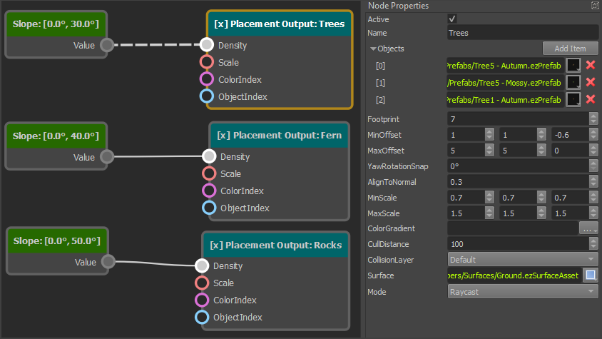
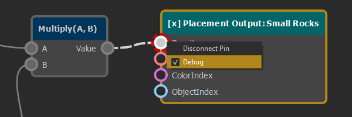
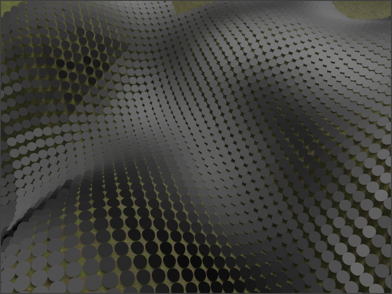

ProcGen Graph Asset
The ProcGen Graph Asset is used to configure the rules for procedural object placement. In this graph structure you define which objects should be placed under which conditions.
Editing the ProcGen Graph
The main area of this document is used to place and connect nodes in a graph. Use the context menu to add nodes. Drag and drop pins from left to right to connect outputs to inputs. Pins usually represent single number values, such as a density value or a single channel of a color (e.g. 'red'). By connecting a pin on the right side of a node (output) to a pin on the left side of a node (input), the output value is forwarded into the other node and affects how that node operates.
Nodes that only have pins on their right side, are pure input nodes, they only provide data for other nodes to consume. Nodes that only have pins on their left side, are output nodes. They consume various input values and then create some kind of result, for example they decide whether to place an object at a certain location.
When you select a node, the property grid shows additional configuration options. The image below shows a graph with three input nodes and three output nodes. Each input node is connected to one output node and thus affects how that output node places objects.

Interactions
- Right-click and drag in the view, to move it around.
- Mouse-wheel to zoom.
- Left-click to select nodes.
- Left-click and drag to select multiple nodes.
- Ctrl + left-click to add or remove a node from the selection.
- Right-click on a node, pin or connection for a context-menu in which you can delete the object.
- Click on an empty spot to open a context menu from which to create new nodes.
- Left-click and drag any pin to connect it to another pin. The UI will indicate which pins can be connected.
Graph Output
What exact output the procedural rules generate depends on which output nodes are present in the graph. Currently these types of output are available:
Tip:
To learn the system, it is best to start with the placement output node and ignore the rest. The simplest possible graph only contains a single such node and nothing else.
Using a ProcGen Graph
The ProcGen graph asset doesn't have any kind of pre-visualization. To see what effect a rule has, you need a scene in which the necessary setup is available.
The scene should contain some geometry with collision meshes, such that raycasts can hit the geometry. Greyboxing and heightfield components work just fine for that.
You also need a component that applies the ProcGen graph. Depending on the output nodes used in the graph this would be one of these:
Make sure the ProcGen graph asset is transformed. Then press play to simulate it. If everything is set up right, you should see objects getting placed around the camera, within the specified volume.
Live Editing
When you edit a ProcGen graph asset, most changes trigger a live update in any running scene. That means you can switch back and forth between the asset and a test scene, and see changes update right away.
However, this is limited to certain types of changes. Changes to referenced assets (such as color gradients or prefabs) won't update the already placed objects.
If such a change was done, you need to stop simulating a scene, and run it again.
Debug Mode
It can be difficult to get an idea for the values that a rule graph produces. To visualize the values, you can right-click any pin and enable the Debug flag. This disables all placement output and instead switches to a mode where for every location only a sphere is rendered, and the shade of the sphere represents the value of the pin on which the debug flag is enabled. Black for 0 and white for 1.

When you then switch to a scene and run the simulation, you will see this pattern:

Building Complex Rules
Once you've figured out the basics, you can build more complex rules.
- Use the ProcGen graph input nodes (TODO) to receive more information about a location, such as its slope or height.
- Pass the data through ProcGen graph math nodes to adjust it as necessary.
- Use ProcGen graph modifier nodes to make it possible to configure the rules locally.